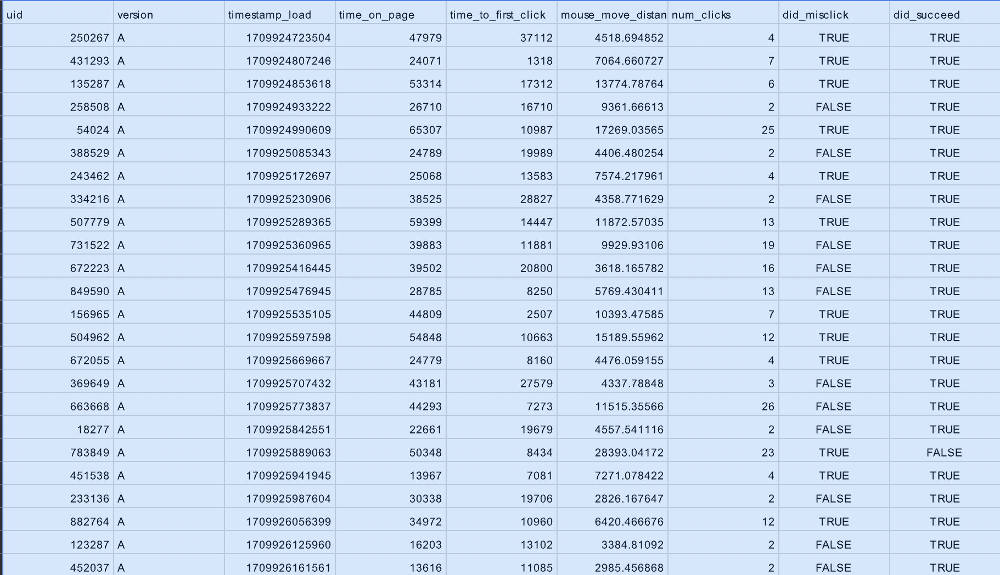
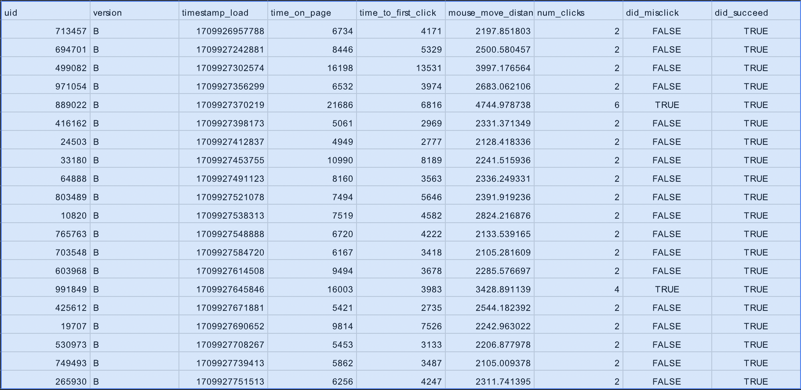
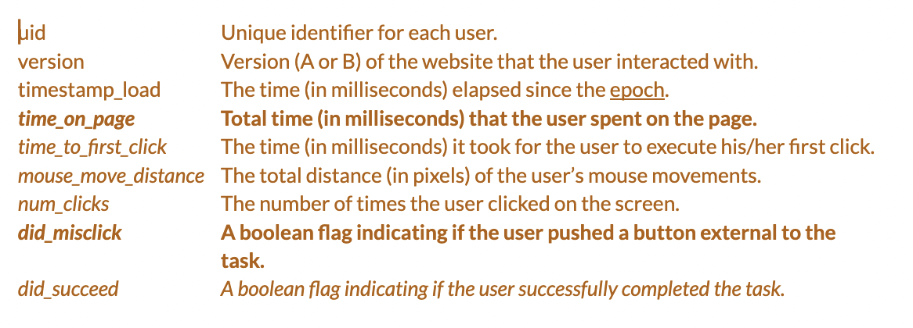
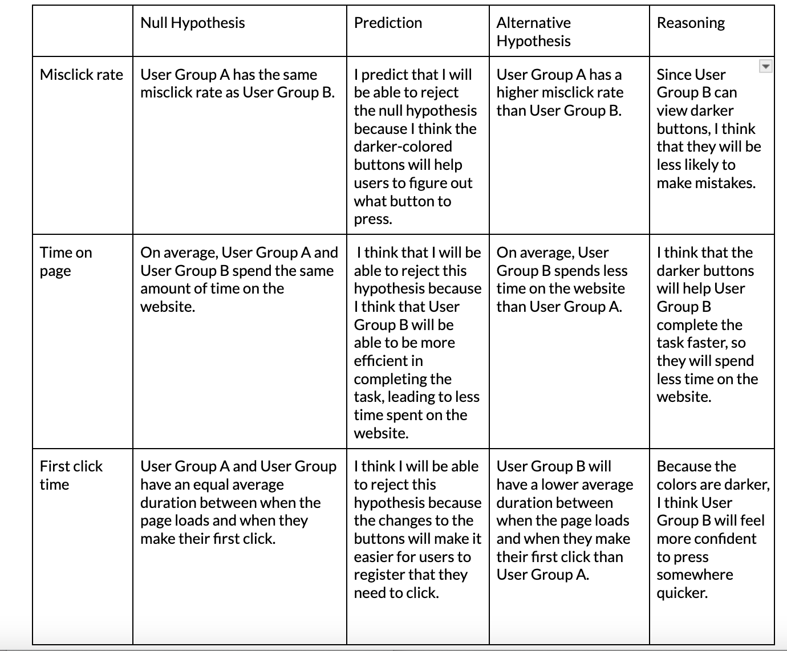

Overview
For this project, I ran a simple A/B test on two different UI designs and analyzed the results. From these results, I drew conclusions on whether the design choice I made could have reasonably impacted user interaction.
The exercise allowed me to learn about and gain experience with the statistical tests used in design work, identify the appropriate statistical test to use in different cases, and interpret raw results of a statistical test to form confident conclusions about how two different designs affect user interaction.
Throughout this test, I tried to prove that the different button colors between websites A and B did affect the users ability to complete the task. A/B testing allows me to figure this out by isolating the variable I’m interested in studying (in this case, button color) while keeping other elements constant. This ensures that any differences in performance can be attributed to the variable being tested. It also provides quantitative data on user behavior. This data allows you to measure the impact of design changes objectively and make data-driven decisions. In addition, A/B testing helps determine whether observed differences in performance are statistically significant or simply due to chance.
Changes
I decided to change the colors of the button to a darker blue. In website A, the buttons are a very light blue color. This makes them harder to see against the white background, and also makes it hard to see the white text on the buttons. Since there are many buttons very close together, it's easy to accidentally press the wrong one. By making the buttons darker in Website B, they are more distinguished from each other and the background.
Test Results
Bellow you can find the test results for each User Group:
 Bellow you can find the key for the data:
Hypotheses
I was told to create a null and alternative hypotheses for misclick rate, time on page, and a metric of my own choosing. I chose to examine the time it takes for the users to make their first clicks. This will help me understand how quickly the users are able to register what is going on.
My hypotheses and reasoning are explained in the chart below.
Statistical Analysis
For Test 1 (misclick rate), I found that 50% of users in Group A misclicked while 10% of users in Group B misclicked. I used used chi-squared to analyze the did_misclick data, a boolean flag indicating if the user pushed a button external to the task, because I compared the magnitude of the difference between the two groups. These were the findings: df = 1, chi^2 = 8.056, p-value = 0.00456. The p-value is less than the typical significance level of 0.05, indicating that the observed difference in misclick rates between User Group A and User Group B is statistically significant. In other words, there is strong evidence to suggest that the misclick rates are different between the two groups, meaning we can reject the null hypothesis. The p-value, as well as the percentages of each group that misclicks, gives us statistically significant evidence that the alternative hypothesis is true.
For Test 2 (time on page), I used a one-tailed t-test to analyze the time on page for each user, measured in milliseconds. I chose this because I was trying to figure out if one amount was bigger/smaller than another. These were the findings: Avg(A) = 8747.95, Variance(A) = 19,473,752.16, Avg(B) = 36,139.46, Variance(B) = 212,313,712.7. Degrees of Freedom = 27.93204421. T-score: -8.740940474. P-value (A < B) = 0.0000000008775480231. The p-value, which indicates whether the average time spent on the website for User Group B is significantly less than that of User Group A, is approximately nearly 0. This extremely low p-value suggests strong evidence to reject the null hypothesis and accept the alternative hypothesis that User Group B spends significantly less time on the website compared to User Group A.
For Test 3 (time to first click), I used a one-tailed t-test to analyze he time it takes for the user to make their first click, measured in milliseconds. I chose this because I was trying to figure out if one amount was bigger/smaller than another. These were the findings: Avg(A) = 4898.8, Variance(A) = 6,492,385.011, Avg(B) = 14,476.875, Variance(B) = 70,695,020.29, Degrees of Freedom = 7.93797278, T-score = -5.296489088, P-value (A < B) = 0.000006208547998. This very low p-value suggests strong evidence to reject the null hypothesis and seems to confirm the alternative hypothesis, which is that User Group B has a significantly lower average duration between the page load and the first click compared to User Group A.
Summary
Based on the provided data for Group A and Group B, I have gathered statistical insights into the behavior of users on a web page. For Group A, which consists of seven metrics collected from users with timestamps ranging from 1709925445168 to 1714933104536, the median values indicate that the typical user takes approximately 13,342.5 milliseconds to make their first click, spends around 32,513.608 milliseconds on the page, moves their mouse approximately 13,354 pixels, and clicks around 8.84 times. The mean values for Group A reveal similar trends, with slight variations. For Group B, the median values suggest that users spend approximately 7,494 milliseconds on the page, take about 4,171 milliseconds to make their first click, move their mouse around 2,608 pixels, and click only 2 times. The mean values for Group B indicate similar trends, with the average time on the page being 8,824.47 milliseconds, time to first click being 5,933.79 milliseconds, mouse move distance being 2,226.49 pixels, and the number of clicks being 2.6. These statistics provide valuable insights into user engagement and interaction with the webpage, suggesting potential areas for improvement in user experience and optimization.
The median and mean values for the time spent on the page (time_on_page) provide insights into user engagement. For example, in Group A, the median time is 13,342.5 milliseconds, indicating that half of the users spend this amount of time or less on the page. The mean time is slightly higher at 32,513.608 milliseconds, suggesting that there might be a few users who spent significantly more time on the page, potentially indicating they had more trouble completing the task.
The time_to_first_click metric provides insights into how quickly users engage with the content after loading the page. In Group A, the median time to first click is 13,342.5 milliseconds, indicating that half of the users interact with the content within this timeframe. The mean time to first click is 13,445.625 milliseconds, suggesting a slightly longer average duration before users initiate their first click. In contrast, Group B exhibits quicker engagement, with a median time to first click of 4,171 milliseconds and a mean time of 5,933.79 milliseconds. This suggests that users in Group B tend to interact with the content more promptly upon page load compared to Group A, which may be because the darker blue buttons make their next step clearer to them.
The mouse_move_distance metric provides insights into user interaction behavior, indicating the extent of mouse movement across the page. In Group A, the median mouse move distance is 13,354 pixels, with a mean of 9,596.667484 pixels, suggesting a moderate level of interaction. Similarly, in Group B, the median mouse move distance is 2,608 pixels, with a mean of 2,226.49 pixels, indicating relatively lower interaction compared to Group A. The num_clicks metric provides insights into user engagement through clicks. In Group A, the median number of clicks is 12, with a mean of 8.84, indicating a higher average engagement level compared to Group B, where the median is 2 and the mean is 2.6.
Overall, Group B seems to have less interaction with the website then Group B. For other studies, this might indicate that the B version is less effective because users seem less engaged. However, the misclick and success rates paint a different picture. For Group A, the misclick rate was 33.3% and the success rate was 95.83%. Meanwhile, for Group B, the misclick rate was 5% and the success rate was 95%. This, along with the amount of engagement for each group, suggests that Group B may have a more efficient and accurate user interaction experience compared to Group A.